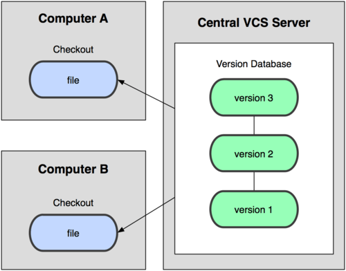
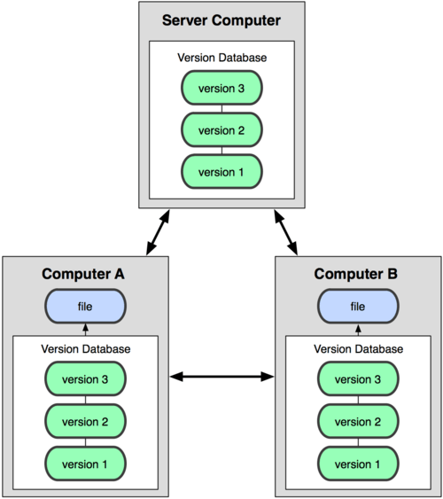

Git vs SVN
SVN

SVN은 중앙 집중식 버전 관리 시스템 (Centeralized Version Control System) 이다.CVCS에선 버전 관리가 되는 중앙 서버가 있고 중앙 서버에서 파일들을 Checkout 하는 다수의 클라이언트가 있다.
이러한 구조는 중앙 서버가 잘못될 경우 모든 클라이언트가 잘못된다는 점이다.
만약 서버가 다운될 경우 서버가 다시 복구 될 때까지 다른사람과의 협업이나 진행 중이던 작업의 버전관리 또한 어려워지게 된다.Branch를 나누었을 때 모든 Branch를 Checkout한다.
Git

Git은 분산 버전 관리 시스템 (Distributed Version Control System) 이다.
DVCS에서는 클라이언트가 파일들의 마지막 Snapshot을 가져오는 대신 Repository를 통째로 복제한다.
이 방법은 서버에 문제가 생겨도 로컬에서 버전 관리가 진행되기 때문에 서버가 다운된 동안에도 작업이 가능하고 다시 복구가 되면 작업했던 내용들을 서버로 push하면 된다.
또한 서버가 폭파되어도 사용자들의 로컬 Repository를 통해서 복구가 가능하다.Branch를 나누었을 때 지정한 Branch만 clone한다.